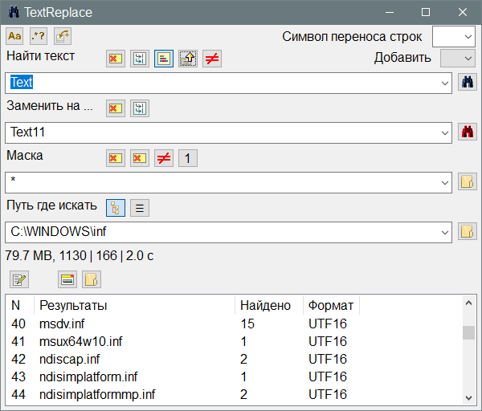

TextReplace
Назначение
Поиск и замена текста в файлах.

Взаимосвязанные
TextReplace
Синтаксис регулярных выражений
RegExp
Пока ещё развиваемая версия, аналог версии на AutoIt3, но теперь есть возможность использовать на Linux. На данный момент программа выполнена в нескольких вариантах - результат в Scintilla в том же окне и результат в отдельном окне. При этом добавлены временные версии с результатом в html-файл с открытием в браузере. Этот вариант можно сделать опциональным. Для Windows добавлен вариант с результатом в RTF, так как в этом случае программа более компактна.